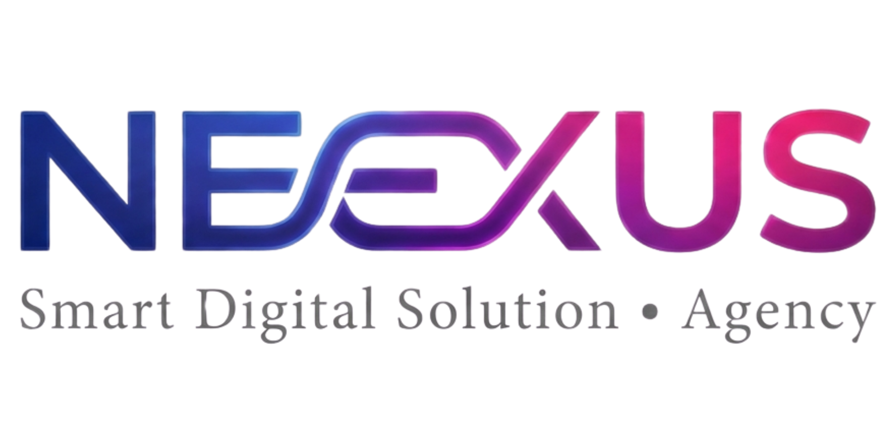

Les heures qui s'évaporent
Saisie manuelle, copier-coller, relances par mail, mises à jour de fichiers. Une équipe de 10 personnes perd en moyenne 12 heures par semaine sur des tâches qu'aucun outil moderne ne devrait laisser à un humain.

On audite votre entreprise, on identifie ce qui pèse sur vos équipes, et on déploie l'IA et les automatisations qui les libèrent du quotidien répétitif. Pour qu'elles se concentrent sur ce qu'elles font de mieux — penser, créer, vendre, prendre soin de vos clients.
Pas dans les comptes. Dans les heures. Dans les commandes oubliées, les mails en retard, les clients qui partent parce que personne n'a pu répondre à temps, les équipes brillantes coincées sur des tâches indignes de leur talent.
Saisie manuelle, copier-coller, relances par mail, mises à jour de fichiers. Une équipe de 10 personnes perd en moyenne 12 heures par semaine sur des tâches qu'aucun outil moderne ne devrait laisser à un humain.
Un appel manqué, c'est un client perdu. Une question sans réponse à 22h, c'est un panier abandonné. Un SAV qui répète 50 fois la même chose, c'est une équipe qui s'épuise et finit par s'en aller.
Une référence mal saisie, une commande mal transmise, un devis envoyé deux fois. Plus le volume monte, plus la marge fond — et plus la pression remonte sur les équipes.
Vos équipes sont déjà à fond. On vous a vendu un seul levier pour avancer : embaucher. Il en existe un autre, dix fois plus rapide, qui ne demande à personne de tirer encore plus.
Neexus propulse les entreprises — petites, moyennes, grandes, tous secteurs — vers le niveau supérieur, grâce à des solutions IA et des automatisations sur mesure.
Aucun copier-coller. Chaque solution est pensée pour votre contexte, vos outils, vos équipes.
Si on ne peut pas chiffrer le gain — en heures, en argent, en satisfaction — on ne le déploie pas. Point.
On ne remplace personne. On enlève ce qui ralentit, on comble les trous dans les process, on amplifie ce qui marche déjà.
Voici quelques contextes que nous connaissons bien — ceux où nos clients ont retrouvé du temps, de la sérénité, et souvent du chiffre. Si le vôtre n'y figure pas exactement, c'est sans doute parce qu'il mérite une étude qui lui ressemble.
Vous ratez des appels pendant que vous êtes en service. Donc des réservations. Donc du chiffre.
Un agent vocal IA qui prend le relais quand personne ne peut décrocher. Il enregistre les réservations, gère les annulations, envoie les rappels. Branché à votre agenda. Votre équipe ne lève plus le nez du client en face d'elle.
Vos équipes plafonnent. Embaucher coûte cher, prend du temps, et ne résout pas le fond du sujet.
Des automatisations sur vos workflows internes (RH, comptabilité, achats, reporting). Vos équipes redeviennent disponibles pour la stratégie, la décision, la relation. La croissance ne se paie plus en burnout.
80% de vos tickets sont les mêmes 10 questions. Vos agents s'essoufflent à répéter, et les vraies urgences attendent leur tour.
Un assistant IA multicanal qui absorbe le volume répétitif et alimente votre base de connaissance en continu. Vos agents reprennent la main sur les cas qui ont besoin d'eux — avec tout le contexte déjà préparé.
Coût d'acquisition qui grimpe, panier moyen qui stagne, paniers abandonnés qui ne reviennent jamais.
Automatisation des relances, recommandations personnalisées, assistant pré-achat, segmentation comportementale. Vous monétisez intelligemment l'audience que vous avez déjà conquise.
Vous courez après les nouveaux clients pendant que les actuels glissent doucement vers la concurrence.
Programmes de fidélisation automatisés, détection prédictive des signaux de churn, parcours de réactivation personnalisés. Vous augmentez le CA sans dépenser un euro en acquisition.
Vos meilleurs éléments passent leur journée sur des tâches qu'ils détestent. Et c'est souvent pour ça qu'ils partent.
Audit de la journée type, identification des 30% de tâches automatisables, déploiement progressif. Ils retrouvent leur temps. Leur motivation. Et la capacité de faire ce pour quoi vous les avez recrutés.
C'est souvent un bon signe — ça veut dire qu'il y a probablement des leviers spécifiques à votre métier qu'on n'a pas encore explorés ensemble. C'est exactement pour ça que l'audit existe.
Vous choisissez ce qui vous parle. Ou on commence par l'audit, et on vous dit où l'investissement libère le plus de temps, le plus vite.
Vos process, sans la friction qui épuise vos équipes.
On connecte vos outils entre eux (CRM, mails, facturation, calendrier, stocks, comptabilité) pour que les données circulent toutes seules. Plus de double saisie. Plus d'oublis. Plus de « j'ai pas eu le temps de mettre à jour le fichier ». Vos collaborateurs retrouvent du temps pour ce qui compte vraiment.
Une commande arrive sur votre site → la facture se génère, le client reçoit son tracking, votre stock se met à jour, votre comptable reçoit le justificatif. Personne n'a rien fait à la main. Il était 23h, votre équipe dormait.
Une voix qui prend le relais quand vos équipes ne peuvent pas décrocher. Et qui passe la main au bon moment.
Un agent vocal IA qui répond à chaque appel, enregistre les réservations, qualifie les demandes, et transfère ce qui mérite un humain à votre équipe — avec tout le contexte déjà préparé. La voix est ultra-réaliste, naturelle, professionnelle. Vos clients sont accueillis instantanément. Vos équipes récupèrent les appels qui méritent vraiment leur attention.
Restaurant fermé le lundi. Un client appelle pour réserver pour samedi. L'agent prend la résa, l'ajoute à votre planning, envoie la confirmation par SMS. Vous découvrez tout ça le mardi matin, café à la main.
« Bonjour, c'est pour réserver samedi 20h pour 4 personnes. »
« Parfait, samedi 20h table pour 4. Je vous confirme par SMS. »
✓ Ajouté à l'agenda · SMS envoyé · CRM mis à jour
Un SAV qui absorbe le volume. Vos agents traitent enfin ce qui mérite leur expertise.
Un assistant IA branché à WhatsApp, Instagram, Messenger, votre site, vos mails. Il connaît vos produits, vos politiques de retour, vos délais. Il répond aux questions répétitives, qualifie les leads, rassure les hésitants, et passe la main à un humain pile au bon moment — avec tout le contexte pour que la prise de relais soit fluide.
E-commerce. 200 messages « où est ma commande ? » par jour. L'assistant lit votre transporteur, répond avec le tracking, propose un geste commercial en cas de retard. Votre SAV se concentre sur 5 vrais cas — ceux qui demandent un cerveau humain et un peu d'empathie.
Des outils pensés pour vos équipes. Pas pour une démo client.
Sites vitrines, e-commerce performants, applications mobiles, dashboards métiers, outils internes sur mesure. Conçus pour être utilisés tous les jours, par des gens réels, avec une UX qu'on aimerait tous voir plus souvent. La techno disparaît, l'usage prend toute la place.
Une équipe terrain qui remplissait des fiches papier reçoit une app mobile : photo, géolocalisation, signature, envoi automatique au siège. Gain : 2h par technicien par jour. Et surtout : zéro frustration en fin de journée.
Du contenu qui convertit. Pas du contenu qui meuble.
Stratégie de contenu, campagnes publicitaires, création visuelle, vidéos générées par IA, automatisation des publications, scoring de leads. On ne fait pas du marketing pour faire du marketing. On le branche directement à votre pipeline commercial — et on laisse vos commerciaux faire ce qu'ils font de mieux : conclure.
30 visuels produits générés à partir d'une seule photo. Postés automatiquement sur 4 réseaux, à l'heure où votre audience est active. Vous voyez les leads tomber dans votre CRM, vos commerciaux ne perdent plus une seule minute sur du prospect froid.
Pas de jargon. Pas de PowerPoint à rallonge. Un cadre clair, des livrables datés, et une équipe qui prend en charge — pour que vos équipes, elles, restent concentrées sur leur métier.
On rentre dans votre entreprise comme si on devait y travailler dès lundi. On cartographie vos process, on identifie les goulots, on chiffre le gain potentiel — en heures, en euros, en satisfaction client. À la fin, vous avez un rapport clair : ce qui coince, ce qui rapporte, dans quel ordre attaquer.
On vous présente le plan. Quelles automatisations, quels outils, quelles IA, dans quel ordre, pour quel ROI. Vous validez, on ajuste. Aucune ligne de code n'est écrite avant que vous ayez dit « go ».
On construit, on intègre, on teste. Vos équipes sont impliquées juste ce qu'il faut — pas plus. On documente tout. On forme les bons interlocuteurs. On bascule en production quand vous êtes prêts, pas avant.
Une solution déployée n'est pas une solution finie. On suit les indicateurs, on ajuste, on améliore. Et quand un nouveau besoin émerge, on est déjà là pour le traiter — sans repartir de zéro.
Et ce ne sont pas des chiffres de plaquette. La grille de calcul est disponible sur demande.
On ne vous vend pas un outil. On choisit le bon pour chaque mission, parmi les meilleurs du marché. Voici ceux que Neexus déploie le plus souvent.
Six clients, six secteurs, un seul réflexe : ne plus perdre une seconde sur ce qu'une machine peut faire.
Avant, on perdait des clientes parce que personne ne décrochait après 19h. L'agent vocal IA encaisse les réservations à 21h, le dimanche, à 7h du matin. Sans embaucher personne.
On a automatisé le traitement des commandes, les relances et le suivi livraison. Trois équivalents temps plein redéployés sur le commercial. Le ROI était positif à la fin du trimestre.
Notre support croulait. Le chatbot a pris 60% des demandes de niveau 1 et appris à escalader les vraies urgences. Le NPS est remonté sans qu'on touche à l'équipe.
Les emails de relance manuels, c'était fini. L'automatisation envoie le bon message au bon moment selon le parcours. Plus de panier moyen, zéro charge mentale en plus.
Les relances de renouvellement étaient bâclées par manque de temps. Maintenant elles sont personnalisées, programmées, suivies. Nos forfaits récurrents tiennent enfin la route.
On a digitalisé l'onboarding, les briefings quotidiens, les notes de service. Mes équipes ne lâchent plus l'entreprise au bout de quatre mois. Un avant/après brutal.
Si la vôtre n'y est pas, écrivez-nous — on répond dans la journée.
30 minutes d'appel. Aucun engagement. À la fin, vous repartez avec une cartographie claire de ce qui peut être automatisé chez vous, et l'estimation du gain associé. Que vous travailliez avec Neexus ensuite ou pas.